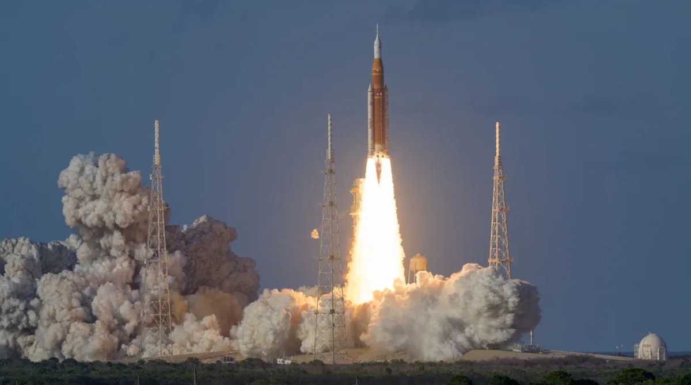
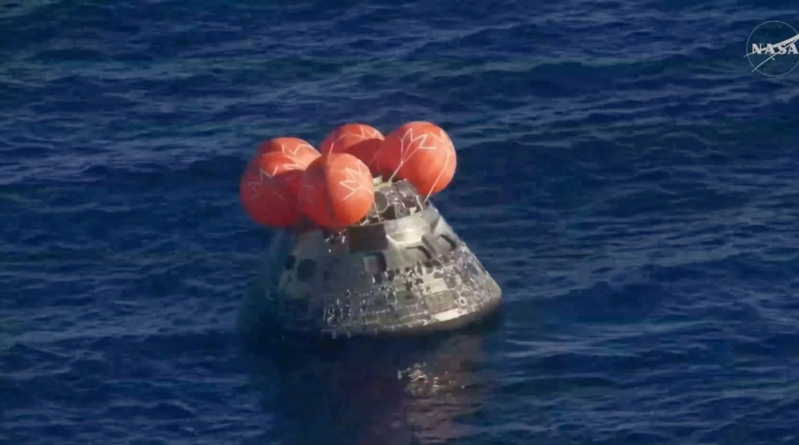

Misja Artemis II jest uznawana za niebezpieczną zarówno podczas startu, jak i powrotu na Ziemię, ponieważ będzie to pierwszy od ponad 50 lat lot ludzi poza orbitę okołoziemską.
Astronauci opuszczą ochronę ziemskiego pola magnetycznego i polecą w głęboką przestrzeń kosmiczną, gdzie są narażeni na silne promieniowanie oraz burze słoneczne.
NASA szczególnie obawia się tzw. zdarzeń słonecznych, które mogą gwałtownie zwiększyć poziom promieniowania wewnątrz statku Orion i zagrozić zdrowiu załogi.
Niebezpieczny jest także sam start rakiety SLS, ponieważ będzie to pierwszy załogowy lot tego systemu. Każda nowa rakieta niesie ryzyko awarii silników, problemów z paliwem
lub błędów systemów pokładowych. Dodatkowo podczas misji astronauci będą znajdowali się setki tysięcy kilometrów od Ziemi, więc w razie poważnej usterki szybka akcja ratunkowa
praktycznie nie będzie możliwa. Najbardziej ryzykownym etapem może być jednak powrót na Ziemię. Kapsuła Orion wejdzie w atmosferę z prędkością około 39 tysięcy km/h,
a temperatura wokół statku osiągnie nawet 5000°F, czyli ponad 2700°C. Osłona termiczna musi wytrzymać ogromne przeciążenia i temperatury.
Po wcześniejszej misji Artemis I wykryto pęknięcia oraz nadmierne odpadanie fragmentów osłony cieplnej, dlatego wielu ekspertów obawiało się, czy system będzie
wystarczająco bezpieczny dla astronautów. NASA zmodyfikowała profil wejścia w atmosferę, aby zmniejszyć ryzyko uszkodzeń, ale pełny test z załogą nadal pozostaje bardzo wymagający.
Dodatkowym problemem podczas powrotu jest tzw. blackout komunikacyjny. W czasie wejścia w atmosferę wokół kapsuły tworzy się warstwa plazmy, która na kilka minut
odcina łączność z centrum kontroli lotów. Oznacza to, że jeśli pojawiłby się problem techniczny, załoga przez pewien czas byłaby całkowicie zdana na siebie.
Mimo tych zagrożeń NASA podkreśla, że misja została bardzo dokładnie przygotowana, a systemy bezpieczeństwa mają ograniczyć ryzyko do minimum.
Artemis II ma być kluczowym krokiem przed przyszłymi lądowaniami ludzi na Księżycu.

